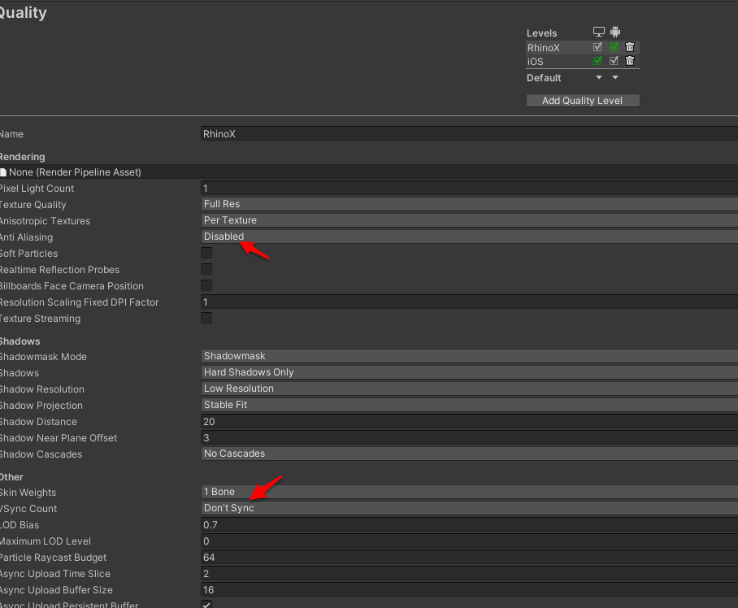

5.RhinoX SDK 迁移到Unity XR SDK
如果你已有一个使用 RhinoX Unity SDK v1.x 系列的项目， 并且希望在不引入新的交互范式(如ActionBase, DeviceBase等交互库)的情况下，将此项目快速迁移到 RhinoX Unity XR SDK上, 可以按照此文档介绍的操作步骤.
需要确保Unity项目的版本是 2019.4+ ，推荐2020.3.
需要提前下载RhinoX Unity SDK v1.6.0 版本, 只有此版本能对接 RhinoX Unity XR SDK.
4.1 替换 v1.6.0 专用DLL
将 RhinoX Unity SDK v1.6.0 中的 RhinoX-Unity.dll和 RhinoX-Unity-Editor.dll 这两个DLL文件覆盖项目 Plugins/RhinoX文件夹中的同名DLL文件.
完成操作后, SDK 的 Welcome window 会显示 version code 为 1.6.0

4.2 导入 RhinoX Unity XR SDK
Note
在 Package Manager 中, 导入 RhinoX Unity XR SDK 开发包, 或者直接编辑 manifest.json 加入对应的引用路径。
4.3 删除或者禁用旧的安卓库文件
在 Assets/Plugins/Android/lib中, 删除或者禁用旧 sdk 中的 xdevice-api.aar 和 其他的Androids 路径下的*.aar库文件.

上图中这些库文件需要删除或者在unity中设置为不加载。
4.4 添加新旧SDK桥接组件, 并设置项目配置
打开Unity场景，在 RxEventSystem 对象上， 添加 Legacy Input Provider

在 PlayerHand 对象上，添加 LegacyTrackReferenceProvider

在 ARCamera上, 添加 LegacyHeadPoseProvider 和 TrackedPoseDriver,并将各个字段设置为如下图所示的值
把 Quality 的 Vsync Count设置为 Don’tSync, Anti Aliasing 设置为 Disabled
在 PlayerSetting中, 把 multi-thread rendering 和 graphics job关闭